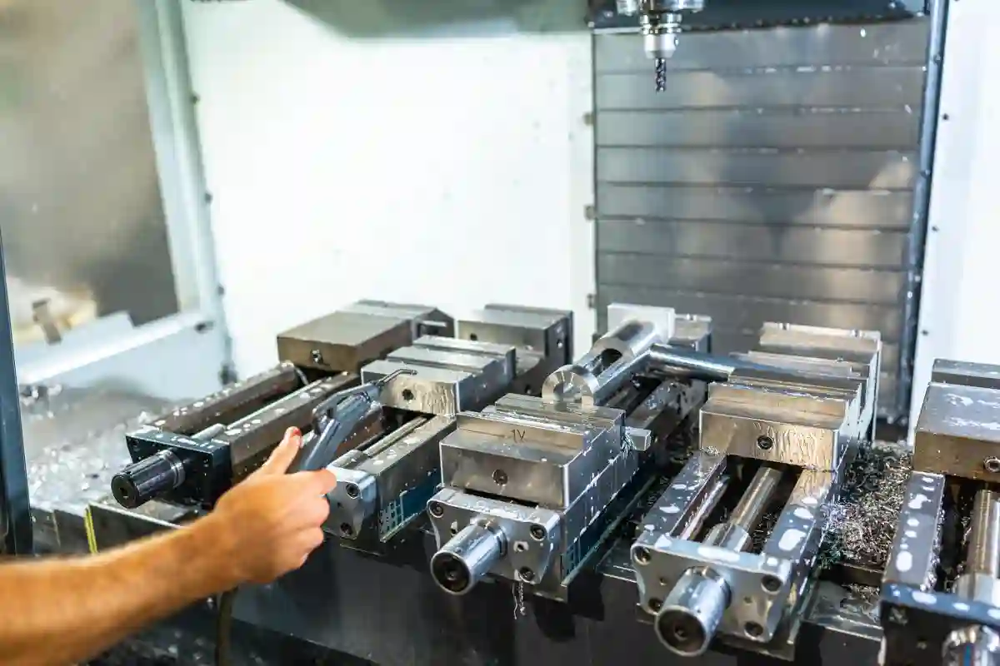
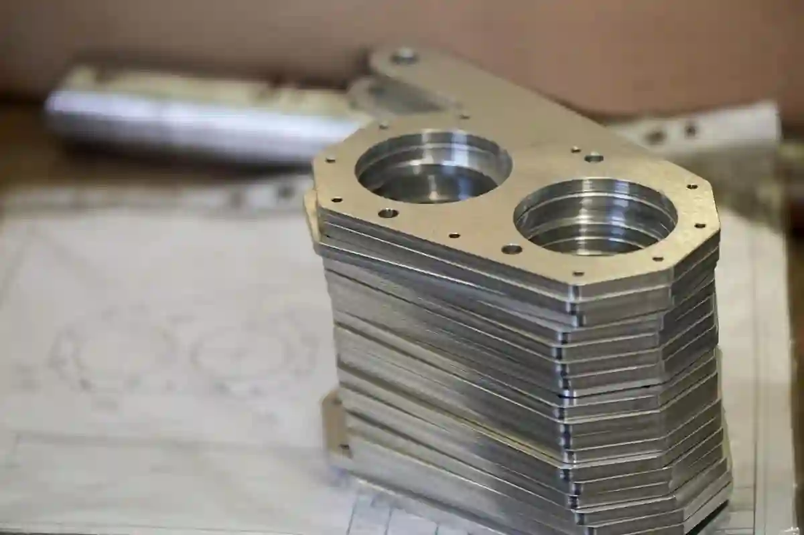

Düşük Adet CNC Üretim: Teknik Avantajlar ve Kullanım Alanları
“Düşük adet cnc üretim”, az adet parça imalatı, küçük seri cnc üretim ve numune parça üretimi gibi teknik süreçlerin temel kavramları, avantajları, sınırlamaları ve uygulama alanları bu yazının merkezinde yer alacaktır.
Bu kılavuzda aşağıdaki sorulara yanıt vereceğiz:
- Az adet cnc üretim nedir ve hangi durumlarda tercih edilir?
- Küçük seri imalat ile toplu üretim arasındaki farklar nelerdir?
- Numune parça üretiminde hangi stratejiler uygulanır?
Düşük Adet CNC Üretim Nedir?

“Düşük adet cnc üretim”, genellikle yüzlerce veya binlerce parçanın üretildiği büyük ölçekli üretim süreçlerinin aksine, az adet parça imalatı gerektiren durumlarda tercih edilen bilgisayar kontrollü makine tezgâhları ile yapılan üretim metodudur.
Bu yöntem:
- Üretim planlama maliyetlerini minimize eder
- Tasarım değişikliğine hızlı uyum sağlar
- Kalıp yatırımını gerektirmez
Burada önemli teknik ayrım, düşük adet özel imalat ve pilot üretim cnc stratejileridir.
CNC Teknolojisinin Temel Prensipleri
CNC (Computer Numerical Control), sayısal kontrol ile çalışan tezgâhların otomatik ve tekrarlanabilir üretim yapmasını sağlar. Aşağıdaki süreçleri içerir:
- CAD çizimlerinin üretim dosyasına dönüştürülmesi
- CAM yazılımında işleme yollarının oluşturulması
- Takım yollarının CNC makinesine aktarılması
- Talaş kaldırma, delme ve yüzey işleme operasyonlarının kontrolü
Bu teknoloji ile numune parça üretimi ve küçük ölçekli 3 eksen/5 eksen işleme gibi üretimler mümkün olur.
Düşük Adet CNC Üretim ile Toplu Üretim Arasındaki Fark
Yüksek hacimli üretimlerde standartlaşma ön plandayken, sınırlı miktarlarda yapılan çalışmalarda esneklik ve hızlı karar alma önem kazanır. Bu yaklaşım, ürün yaşam döngüsünün erken aşamalarında avantaj sağlar. Konuya bütüncül bakış için Özel Parça İmalatı Blog içerikleri referans alınabilir.
Maliyet ve Yatırım Analizi
Büyük ölçekli üretim süreçlerinde yüksek hacimlerde parça üretimi için genellikle kalıp/doküm maliyetleri gibi başlangıç maliyetleri oluşurken, düşük adet özel imalat süreçlerinde bu maliyetler bulunmaz. CNC tezgâhları ile:
- Kalıp gereksinimi ortadan kalkar
- Karmaşık geometriler daha düşük maliyetle işlenir
Esneklik ve Tasarım Revizyonu
Numune üretim veya pilot üretim aşamalarında tasarımda sık değişiklikler olabilir. Bu tür durumlarda CNC üretim esnekliği işleri kolaylaştırır: Bu esneklik hakkında resmi endüstri standartları ve bilgiler için TÜBİTAK Makine Teknolojileri Duyuru Sayfası üzerinden güncel teknik notlarını arayabilirsiniz.
Az Adet Parça İmalatı İçin Teknik Stratejiler
Üretim öncesinde doğru planlama, takım seçimi ve işleme sıralaması belirleyicidir. Süreç boyunca geri bildirim mekanizmalarının açık olması, revizyonları kolaylaştırır. Teknik altyapının doğru anlaşılması için Prototip Parça Üretimi Nedir? Tasarımdan Üretime Süreç Rehberi yol gösterici niteliktedir.
İş Planlama ve CAM Ayarları
Az adet üretimde üretim planlaması, takım seçimi ve kesme parametreleri kritik önemdedir. İyi bir CAM programlaması aşağıdaki faydaları sağlar:
- Kesme süresini optimize eder
- Takım ömrünü uzatır
- İş parçası yüzey kalitesini artırır
Bu bölümde üretim mühendislerinin kullandığı stratejilere değinilecektir.
Düşük Adet CNC Üretim Süreçlerinin Teknik Avantajları

Az adet cnc üretim, özellikle az adet parça imalatı ve küçük seri cnc üretim gereksinimi olan projelerde, geleneksel seri üretim yöntemlerine kıyasla ciddi teknik avantajlar sunar. Bu avantajlar yalnızca maliyet eksenli değildir; zaman, kalite, mühendislik esnekliği ve risk yönetimi açısından da belirleyicidir.
Bu üretim yaklaşımı, özellikle numune parça üretimi, pilot üretim cnc çalışmaları ve müşteri bazlı özel projelerde tercih edilir.
Kalıp ve Ön Yatırım Gerektirmeyen Üretim Modeli
Seri üretim yöntemlerinde (enjeksiyon, döküm vb.) kalıp yatırımı kaçınılmazdır. Ancak düşük adet özel imalat projelerinde bu yatırım çoğu zaman ekonomik değildir.
Düşük adet cnc üretim sayesinde:
- Kalıp maliyeti tamamen ortadan kalkar
- Tasarımdan üretime geçiş süresi ciddi şekilde kısalır
- Projenin erken aşamasında finansal risk minimize edilir
Bu yaklaşım, özellikle Ar-Ge ve ürün doğrulama safhalarında stratejik bir avantaj sağlar.
Tasarım Revizyonlarına Hızlı Uyum
Küçük seri cnc üretim süreçlerinin en güçlü yönlerinden biri, tasarım değişikliklerine hızlı adapte olabilmesidir. CAD dosyasında yapılan bir revizyon, CAM programına aktarılıp aynı gün içerisinde üretime alınabilir.
Bu durum şu senaryolarda kritiktir:
- Numune parça üretimi sonrası geri bildirim alınması
- Fonksiyonel testlerde tespit edilen geometrik iyileştirmeler
- Müşteri taleplerine göre ölçü veya tolerans değişiklikleri
Bu esneklik, geleneksel seri üretimde mümkün olmayan bir çeviklik sağlar.
Küçük Seri CNC Üretim ile Hassasiyet ve Kalite Kontrol
Hassas çalışmalarda ölçüm yöntemleri ve proses içi kontrol büyük rol oynar. Her aşamada doğrulama yapılması, nihai çıktının güvenilirliğini artırır. Kalite odaklı yaklaşımın kurumsal çerçevesi Prototip Üretim ve Ar-Ge Desteği kapsamında detaylı biçimde ele alınmaktadır.
Tolerans Yönetimi ve Ölçüsel Doğruluk
Düşük adet cnc üretim, yüksek hassasiyet gerektiren parçalar için idealdir. CNC tezgâhlarının sunduğu sayısal kontrol sayesinde:
- ±0,01 mm ve altı toleranslar yönetilebilir
- Ölçüsel sapmalar anlık olarak izlenebilir
- Tekrarlanabilir kalite elde edilir
Bu özellik, özellikle savunma, medikal ve otomasyon sektörlerinde az adet parça imalatı gerektiren projelerde belirleyicidir.
Proses İçi ve Son Kontrol Yaklaşımı
Az adetli üretimde her parça kritik kabul edilir. Bu nedenle kalite kontrol yalnızca üretim sonunda değil, proses sırasında da gerçekleştirilir.
Uygulanan yöntemler şunlardır:
- İlk parça onayı (First Article Inspection)
- Ara ölçüm ve takım aşınma kontrolü
- Final ölçüm raporları
Bu yaklaşım, düşük adet özel imalat projelerinde hatalı üretim riskini minimize eder.
Numune Parça Üretimi ve Pilot Üretim CNC Stratejileri
Erken aşama üretimlerde amaç, tasarımın gerçek koşullarda test edilmesidir. Bu süreçte geri bildirim döngüsünün hızlı işlemesi kritik öneme sahiptir. Satın alma ve planlama perspektifi için Düşük Adet CNC Üretim ve Prototip Satın Alma Rehberi önemli bir referanstır.
Numune Üretiminin Ar-Ge Sürecindeki Rolü
Numune parça üretimi, ürün geliştirme sürecinin en kritik aşamalarından biridir. Tasarımın yalnızca kağıt üzerinde değil, fiziksel olarak test edilmesini sağlar.
Bu aşamada az adet cnc üretim şu katkıları sunar:
- Fonksiyonel testlerin gerçek parça üzerinde yapılması
- Malzeme davranışının gözlemlenmesi
- Montaj uyumunun doğrulanması
Pilot Üretim ile Seri Üretim Arasındaki Köprü
Pilot üretim cnc, numune üretimi ile seri üretim arasındaki geçiş aşamasıdır. Bu safhada amaç:
- Üretilebilirlik sorunlarını tespit etmek
- Süreç sürelerini ölçmek
- Maliyet projeksiyonlarını netleştirmektir
Küçük seri cnc üretim, bu aşamada gerçek üretim koşullarını simüle etme imkânı sunar.
Düşük Adet CNC Üretim Süreçlerinin Sınırlamaları
Her üretim metodunda olduğu gibi düşük adet cnc üretim yaklaşımı da belirli sınırlar ve dikkat edilmesi gereken teknik gerçekler içerir. Bu sınırlamaların doğru analiz edilmemesi, az adet parça imalatı projelerinde beklenmeyen maliyet artışlarına veya zaman kayıplarına yol açabilir.
Bu nedenle bu üretim modeli yalnızca avantajlarıyla değil, hangi koşullarda dezavantaja dönüştüğüyle birlikte değerlendirilmelidir.
Birim Maliyetlerin Görece Yüksek Olması
Küçük seri cnc üretim ve numune parça üretimi projelerinde en sık karşılaşılan durum, parça başına düşen maliyetin seri üretime kıyasla yüksek olmasıdır. Bunun temel nedenleri şunlardır:
- Programlama ve kurulum süresinin parça adedinden bağımsız olması
- Operatör ve mühendislik zamanının her proje için yeniden harcanması
- Takım ayarlama ve proses optimizasyonunun her işte tekrar yapılması
Bu durum, düşük adet özel imalat projelerinde doğal ve kaçınılmaz bir maliyet bileşenidir.
Ölçek Ekonomisinin Devreye Girememesi
Seri üretimde maliyetler adet arttıkça düşerken, düşük adet cnc üretim süreçlerinde ölçek ekonomisi sınırlı çalışır. Özellikle:
- 5–50 adet arası üretimlerde
- Yüksek hassasiyet ve dar tolerans gerektiren parçalarda
- Çok eksenli işleme operasyonlarında
birim maliyetler stabil kalır veya artış gösterebilir.
Bu nedenle üretim adedi belirlenirken pilot üretim cnc ile seri üretim arasındaki eşik doğru tanımlanmalıdır.
Az Adet Parça İmalatı Hangi Durumlarda Uygun Değildir?
Standart ürünlerin uzun süre değişmeden üretildiği projelerde bu yaklaşım verimli olmayabilir. Yüksek adet ve tekrar eden işler için farklı üretim modelleri daha rasyonel sonuçlar verir. Alternatif yaklaşımlar Özel Parça İmalatı Blog altında karşılaştırmalı olarak incelenmektedir.
Yüksek Adetli ve Standart Parçalar
Eğer üretilecek parça:
- Standart geometrilere sahipse
- Yüksek adetlerde (binlerce–on binlerce) üretilecekse
- Uzun süre değişmeden üretimde kalacaksa
Düşük adet cnc üretim yerine kalıplı veya otomasyona dayalı seri üretim yöntemleri daha rasyonel olabilir.
Aşırı Karmaşık ve Uzun İşleme Süreleri
Bazı parçalar, geometrik olarak CNC ile üretilebilir olsa bile:
- Çok uzun işleme süreleri
- Aşırı takım değişimi
- Yüksek fire riski
nedeniyle küçük seri cnc üretim için verimsiz hale gelebilir. Bu noktada tasarımın üretilebilirlik (DFM) açısından yeniden ele alınması gerekir.
Düşük Adet Özel İmalat İçin Maliyet Kalemleri
Kurulum, programlama ve kontrol süreçleri maliyetin temel bileşenleridir. Bu giderler miktardan bağımsız oluştuğu için karar aşamasında dikkatle değerlendirilmelidir. Sürecin mali boyutu Düşük Adet CNC Üretim ve Prototip Satın Alma Rehberi içinde sistematik biçimde açıklanır.
Programlama ve Kurulum Maliyetleri
Numune parça üretimi ve pilot üretim cnc projelerinde en kritik maliyet kalemlerinden biri, CAM programlama ve makine kurulum süresidir. Bu süre:
- Parça karmaşıklığına
- İşlenecek yüzey sayısına
- Kullanılan eksen sayısına
bağlı olarak artış gösterebilir.
Bu maliyet, üretim adedi arttıkça parçaya bölünür; ancak az adet parça imalatı projelerinde doğrudan birim maliyete yansır.
Malzeme ve Takım Seçiminin Etkisi
Malzeme seçimi, düşük adet cnc üretim maliyetlerinde belirleyici bir faktördür. Özellikle:
- Paslanmaz çelik
- Titanyum alaşımları
- Sert alüminyum serileri
İşleme süresini uzatır ve takım aşınmasını artırır. Bu da düşük adet özel imalat projelerinde maliyetleri doğrudan etkiler. Bu konuda teknik referans olarak TMMOB Makina Mühendisleri Odası referans olarak alınabilir.
Doğru Karar İçin Teknik Değerlendirme Yaklaşımı
Karar verirken yalnızca birim maliyet değil, zamanlama, risk ve değişiklik ihtimali birlikte ele alınmalıdır. Teknik analizler uzun vadeli faydayı ortaya koyar. Bu bakış açısını geliştirmek için Prototip Üretim ve Ar-Ge Desteği başlığı altında sunulan yöntemler incelenebilir.
Parça Başına Değil, Proje Bazlı Düşünmek
Düşük adet cnc üretim kararları verilirken yalnızca parça başı maliyet değil; aşağıdaki kriterler birlikte değerlendirilmelidir:
- Pazara çıkış süresi
- Tasarım değişiklik ihtimali
- Ar-Ge ve doğrulama gereksinimi
- Seri üretime geçiş planı
Bu bakış açısı, küçük seri cnc üretim projelerinde uzun vadede daha doğru sonuçlar doğurur.
Düşük Adet CNC Üretim Nerelerde Kullanılır?
Az Adet CNC Üretim, yüksek hacimli üretimin ekonomik veya teknik olarak rasyonel olmadığı birçok sektörde stratejik bir üretim modeli olarak konumlanır. Özellikle az adet parça imalatı, küçük seri cnc üretim ve numune parça üretimi gerektiren projelerde yaygın şekilde kullanılır.
Bu yaklaşım, yalnızca üretim adedinin düşük olmasıyla değil; ürün yaşam döngüsünün erken evrelerinde sağladığı esneklikle de öne çıkar.
Savunma, Havacılık ve Güvenlik Sektörü
Bu sektörlerde izlenebilirlik, doğruluk ve dokümantasyon esastır. Her parça, sistem bütünlüğü açısından kritik kabul edilir. Sektörel uygulamalara dair kapsamlı örnekler Özel Parça İmalatı Blog içerisinde teknik perspektifle ele alınmaktadır.
Düşük Adet – Yüksek Hassasiyet Dengesi
Savunma ve havacılık projelerinde çoğu zaman yüksek adetli üretim değil, yüksek doğruluk ve izlenebilirlik ön plandadır. Bu nedenle düşük adet cnc üretim, aşağıdaki senaryolarda kritik rol oynar:
- Özel bağlantı elemanları
- Test ve doğrulama aparatları
- Sistem entegrasyonuna özel parçalar
Bu projelerde küçük seri cnc üretim, kalite güvencesi ve dokümantasyon açısından da avantaj sağlar. Sektörel çerçeve ve üretim standartları hakkında detaylı bilgi için Savunma Sanayii Başkanlığı – Sanayi ve Teknoloji Ekosistemine bakılabilir.
Medikal ve Biyomedikal Uygulamalar
Hasta güvenliği ve regülasyonlara uyum, bu alandaki çalışmaların temelini oluşturur. Erken testler ve doğrulama süreçleri ürün başarısını doğrudan etkiler. Tasarımdan uygulamaya geçiş adımları Prototip Parça Üretimi Nedir? Tasarımdan Üretime Süreç Rehberi ile detaylandırılmıştır.
Numune Parça Üretimi ve Klinik Öncesi Testler
Medikal cihaz ve ekipman geliştirme süreçlerinde örnek parça üretimi, ürünün pazara çıkış süresini doğrudan etkiler. Bu alanda düşük adet cnc üretim şu nedenlerle tercih edilir:
- Hasta veya vaka bazlı özel tasarımlar
- Klinik öncesi test parçaları
- Sertifikasyon sürecine hazırlık
Bu projelerde düşük adet özel imalat, yüksek tolerans ve yüzey kalitesi gereksinimlerini karşılar.
Endüstriyel Makine ve Otomasyon Sistemleri
Her makine konfigürasyonu kendine özgü çözümler gerektirir. Standart parçaların yeterli olmadığı durumlarda esnek üretim yaklaşımları devreye girer. Bu tür uygulamalarda mühendislik desteğinin rolü Prototip Üretim ve Ar-Ge Desteği kapsamında açıklanmaktadır.
Küçük Seri CNC Üretim ile Özel Makine Parçaları
Otomasyon ve özel makine imalatında her proje kendine özgüdür. Standart parça kullanımı çoğu zaman mümkün değildir. Bu noktada küçük seri cnc üretim devreye girer.
Tipik kullanım alanları:
- Özel fikstür ve bağlama elemanları
- Test aparatları
- Revizyon ve modernizasyon parçaları
Bu yaklaşım, makine üreticilerine hızlı çözüm ve tasarım özgürlüğü sağlar.
Ar-Ge, Girişimler ve Ürün Geliştirme Ekipleri
Yeni fikirlerin hızlı doğrulanması, pazara çıkış süresini kısaltır. Fiziksel ürün üzerinden geri bildirim almak büyük avantaj sağlar. Bu sürecin stratejik yönetimi Düşük Adet CNC Üretim ve Prototip Satın Alma Rehberi ile sistematik hale getirilebilir.
Pilot Üretim CNC ile Pazara Hızlı Çıkış
Start-up’lar ve Ar-Ge ekipleri için zaman, çoğu zaman maliyetten daha kritiktir. pilot üretim cnc, bu ekiplerin:
- Ürünlerini hızlıca doğrulamasına
- Yatırımcı sunumları için fiziksel ürün hazırlamasına
- Erken kullanıcı geri bildirimleri toplamasına
olanak tanır.
Bu süreçte düşük adet cnc üretim, fikirden ürüne geçişte en etkili köprülerden biridir.
Saha Onarım, Yedek Parça ve Revizyon Projeleri
Üretimi durdurulmuş veya temini zor parçalar için yeniden imalat kritik rol oynar. Bu yaklaşım, mevcut sistemlerin kullanım ömrünü uzatır. Benzer uygulama senaryoları Özel Parça İmalatı Blog içerisinde pratik örneklerle sunulmaktadır.
Az Adet Parça İmalatı ile Süreklilik Sağlama
Eski makineler veya özel sistemler için yedek parça temini her zaman mümkün olmayabilir. Bu durumda düşük adet parça imalatı kritik hale gelir.
Düşük Adet CNC Üretim sayesinde:
- Üretimi durmuş parçalar yeniden imal edilir
- Makine ömrü uzatılır
- Yatırım maliyetleri azaltılır
Bu yaklaşım, özellikle bakım-onarım ve sürdürülebilirlik projelerinde yaygın olarak kullanılır.
Düşük Adet CNC Üretim İçin Doğru Tedarikçi Nasıl Seçilir?
Düşük Adet CNC Üretim, standart seri üretimden farklı olarak yalnızca makine parkuru değil, mühendislik kabiliyeti, proses disiplini ve iletişim kalitesi gerektirir. Bu nedenle tedarikçi seçimi, projenin başarısını doğrudan etkiler.
Yanlış tedarikçi seçimi; hatalı numune, gecikmiş teslimat ve maliyet artışı gibi sonuçlar doğurabilir.
Makine Parkuru Kadar Mühendislik Yetkinliği
Az adetli projelerde en sık yapılan hata, yalnızca makine sayısına odaklanmaktır. Oysa küçük seri cnc üretim ve numune parça üretimi projelerinde aşağıdaki yetkinlikler kritik önemdedir:
- CAD/CAM entegrasyonu
- Üretilebilirlik (DFM) geri bildirimi
- Tolerans ve yüzey kalitesi tecrübesi
- Proses içi ölçüm disiplini
Bu yetkinlikler yoksa, düşük adet özel imalat projeleri yüksek risk taşır.
Referans ve Benzer Proje Deneyimi
Pilot üretim cnc veya az adet parça imalatı yaptırmadan önce tedarikçinin daha önce benzer projeler üretip üretmediği mutlaka sorgulanmalıdır.
Şu sorular yol göstericidir:
- Daha önce benzer toleranslarda parça ürettiniz mi?
- Numune üretim sonrası revizyon sürecini nasıl yönetiyorsunuz?
- Prototipten seri üretime geçiş tecrübeniz var mı?
Bu sorular, tedarikçinin yalnızca üretici mi yoksa çözüm ortağı mı olduğunu netleştirir.
Düşük Adet CNC Üretim Satın Alma Sürecinde Sorulması Gereken Sorular
Teklif öncesinde teknik beklentilerin netleştirilmesi, sürecin sağlıklı ilerlemesini sağlar. Revizyon, teslim süresi ve kalite kriterleri baştan tanımlanmalıdır. Bu çerçevede hazırlanan kontrol listeleri Düşük Adet CNC Üretim ve Prototip Satın Alma Rehberi içinde yer alır.
Teknik Netlik Sağlayan Sorular
Satın alma sürecinde belirsizlik, maliyet ve zaman kaybına yol açar. Bu nedenle az adet cnc üretim için teklif istemeden önce şu başlıklar netleştirilmelidir:
- İşlenecek malzeme ve tolerans aralıkları
- Beklenen yüzey kalitesi
- Ölçüm ve kalite kontrol yöntemi
- Revizyon durumunda izlenecek yol
Bu netlik, küçük seri cnc üretim projelerinde tekliflerin sağlıklı karşılaştırılmasını sağlar.
Teslim Süresi ve Revizyon Senaryoları
Numune parça üretimi projelerinde ilk teslim kadar, revizyon süresi de kritiktir. Bu nedenle şu sorular sorulmalıdır:
- Revize parça teslim süresi nedir?
- Tasarım değişikliği maliyete nasıl yansır?
- Acil üretim senaryosu mümkün mü?
Bu yaklaşım, pilot üretim cnc süreçlerinde zaman kaybını önler.
Düşük Adet CNC Üretim ile Uzun Vadeli Strateji Kurmak
Erken aşamada yapılan üretimler, gelecekteki ölçeklenme kararlarına ışık tutar. Bilgi birikiminin korunması stratejik avantaj sağlar. Uzun vadeli yaklaşımın kurumsal karşılığı Prototip Üretim ve Ar-Ge Desteği başlığı altında ele alınmaktadır.
Prototipten Seri Üretime Giden Yol
Başarılı firmalar, az adet cnc üretim süreçlerini yalnızca tek seferlik iş olarak değil, uzun vadeli üretim stratejisinin ilk adımı olarak ele alır.
Bu strateji şu faydaları sağlar:
- Tasarım hataları erken aşamada tespit edilir
- Seri üretime geçişte sürpriz maliyetler azalır
- Üretim bilgisi kurumsal hafızaya dönüşür
Bu nedenle az adet parça imalatı, doğru kurgulandığında yüksek katma değer üretir.
Sonuç – Düşük Adet CNC Üretim Ne Zaman Doğru Tercihtir?
Özetlemek gerekirse az adet cnc üretim;
- numune parça üretimi gerekiyorsa
- küçük seri cnc üretim ile pazarı test etmek isteniyorsa
- Tasarım değişikliği ihtimali yüksekse
- Kalıp yatırımı rasyonel değilse
en doğru üretim yöntemlerinden biridir.
Ancak bu yöntemin başarısı, doğru teknik analiz, uygun tedarikçi ve net hedeflerle mümkündür.